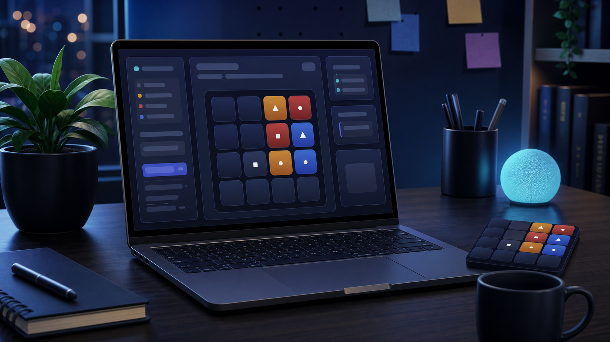

Welcome
My name is JUNYU CHEN, and I am a Business Management and Information Systems (BMIS) student interested in web development, JavaScript programming, and interactive online applications. This website introduces me and includes a real-time multiplayer puzzle game.

About This Website
This project contains three main pages. The Home page gives a short introduction, the About page explains my academic interests in more detail, and the game page contains a turn-based puzzle game developed with Node.js, Express, and Socket.IO.
Project Goals
The main goal of this project is to demonstrate the ability to build a structured website, style it consistently, and create an interactive application where multiple users can communicate with a shared server in real time.